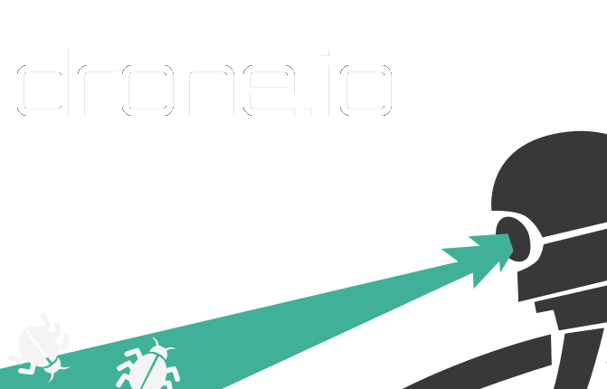

CI
CI
CI
CI
CI
CI
CI
CI

VM
Docker
root@vps07:~# docker pull fedora
Pulling repository fedora
5cc9e91966f7: Download complete
b7de3133ff98: Download complete
511136ea3c5a: Download complete
ef52fb1fe610: Download complete
root@vps07:~# docker run fedora uname -a
Linux 17b6d4fbe1e4 3.13.0-24-generic #46-Ubuntu SMP Thu Apr 10 19:11:08 UTC 2014 x86_64 x86_64 x86_64 GNU/Linux
root@vps07:~# docker run fedora cat /etc/fedora-release
Fedora release 20 (Heisenbug)
root@vps07:~# docker run fedora echo Hello, World!
Hello, World!root@vps07:~# docker run fedora touch /tmp/bazinga
root@vps07:~# docker ps -a
CONTAINER ID IMAGE COMMAND
2120010fe35e fedora:20 touch /tmp/bazinga
2a23a2804f2e fedora:20 cat /etc/fedora-rele
17b6d4fbe1e4 fedora:20 uname -a
0d43d9e6d79d fedora:20 echo Hello, World!
bd49f1bdce76 dokku/gauth:latest /bin/bash -c '/start
2b259bc79412 dokku/fudcon-cd:latest /bin/bash -c '/startroot@vps07:~# docker diff 2120010fe35e
C /dev
C /dev/ptmx
C /tmp
A /tmp/bazinga
root@vps07:~# docker rm 2120010fe35e
CI
gbraad ~ FUDCon presentation reveal git remote add dokku dokku@apps.spotsnel.net:fudcon-cd
gbraad ~ FUDCon presentation reveal git push dokku master
Counting objects: 35, done.
Delta compression using up to 4 threads.
Compressing objects: 100% (32/32), done.
Writing objects: 100% (32/32), 343.22 KiB | 0 bytes/s, done.
Total 32 (delta 2), reused 0 (delta 0)
-----> Cleaning up ...
-----> Building fudcon-cd ...
remote: Cloning into '/tmp/tmp.rioqngxsnd'...
remote: done.
remote: HEAD is now at c5eeb4b... Add styling (fonts and favicon)
Node.js app detected
-----> Requested node range: 0.10.x
-----> Resolved node version: 0.10.28
-----> Downloading and installing node
-----> Restoring node_modules directory from cache
-----> Pruning cached dependencies not specified in package.json
-----> Writing a custom .npmrc to circumvent npm bugs
-----> Installing dependencies
-----> Caching node_modules directory for future builds
-----> Cleaning up node-gyp and npm artifacts
-----> Building runtime environment
-----> Discovering process types
Procfile declares types -> web
-----> Releasing fudcon-cd ...
-----> Deploying fudcon-cd ...
=====> Application deployed:
http://fudcon-cd.apps.spotsnel.net
To dokku@dokku.spotsnel.net:fudcon-cd
88a15bc..c5eeb4b master -> master
gbraad ~ FUDCon presentation reveal